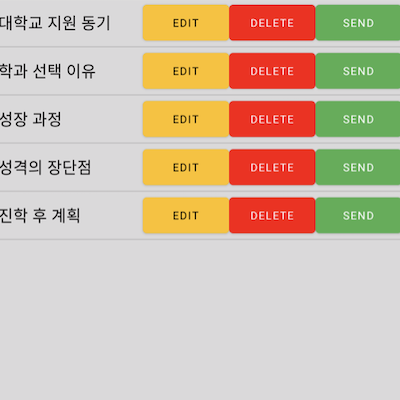
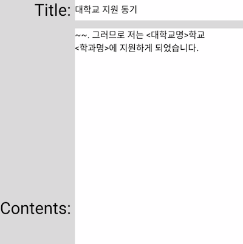
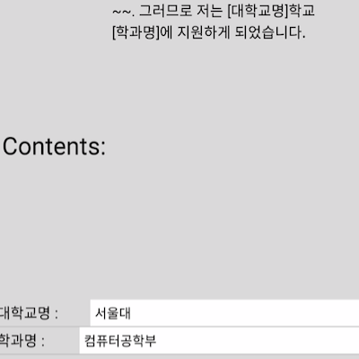
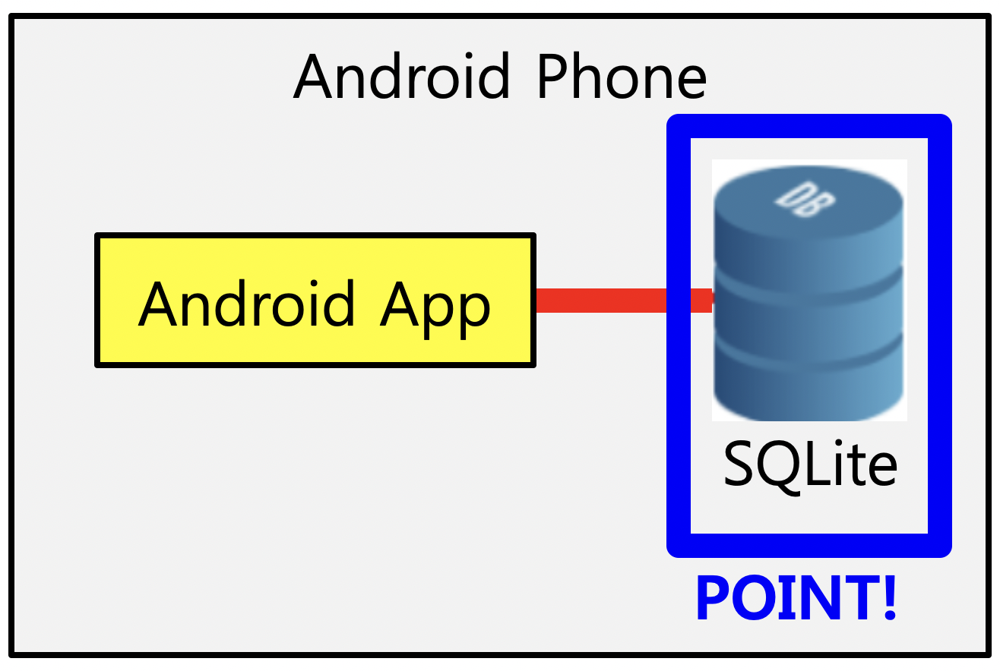

Implemented Functions
|

|
A function to Load a list of Cover Letters
You can see a list of currently saved resumes.
|
|

|
A function to Write Cover Letters
You can write a new self-introduction letter. In this case, you can place blank spaces with '<' and '>'.
|
|

|
A function to Deploy Cover Letters
By filling in the blanks in the self-introduction letter, you can distribute it in your own words.
|
Things to Contribute to Society
By arranging blank spaces in the self-introduction letter, it is very convenient to manage multiple self-introduction statements into one, and the number of mistakes made by typos is greatly reduced. In addition, it can be used not only for employment self-introduction, but also for graduate school academic plans and external activity applications.
Background and Purpose
If each company writes and manages a self-introduction separately, it is very inconvenient because when you edit one thing, you have to edit the rest one by one. If you only apply to one place, that's fine, but getting a job is a game of odds, so no job seeker will only apply to one place.
What I Learned
- I learned how to insert, modify, view and delete data after building SQLite on Android.
- I learned how to add sharing to Android.
- I learned how to use ListView on Android.
- I learned how to build an Android app.
Process
- First of all, the contents of the self-introduction letter must be permanently saved, so I created the SQLite DB within the app in the ‘Android Programming’ book and executed the data storage example.
- The self-introduction letter should be displayed as a list by item, and each self-introduction letter should have edit, delete, and export functions. So, there should be a button for each list. Therefore, I found an example of placing a button in each ListView item on Google and executed it.
- I implemented a function to manage self-introduction by item by combining the examples that have been executed so far and allowing the content to be modified or deleted when a button is touched.
- I implemented a function to add a self-introduction by placing an ‘add’ button at the bottom of the screen. At this time, I put the angle brackets (<, >) to place a blank space.
- When exporting, it is necessary to fill in the blanks created when writing the self-introduction letter, so in the example of placing buttons for each ListView item, only buttons were replaced with input fields and an input field was placed for each item.
- However, I did not know how to extract all the contents of the input field for each ListView item. So, I found an example code in Google and implemented a function to reflect the entered information in the self-introduction.
- Finally, I implemented a function to export the content of the self-introduction to KakaoTalk, etc after finding a sharing example on Google.
- In this way, I was able to implement the program I wanted.
A thing to have Done my Best to Strengthen my Abilities
SQLite DB creation and data storage within the app, and new use of ListView
Overall Structure

Used Skills
Android, Java, SQLite
Development Environment
Android Studio